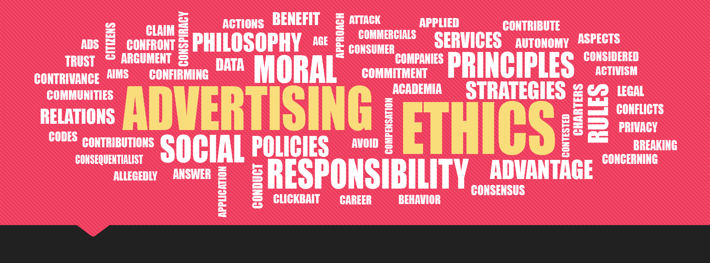

Need
Move a discussion-rich advertising course beyond emergency remote delivery while supporting a veteran professor who had limited confidence with educational technology.

How do you help an expert teacher move online without losing what makes her classroom work? Oh, and she's also your mother.
When COVID-19 extended remote teaching into 2021, I volunteered to help Mariea Hoy, my mother and university professor, transform Advertising Issues from an emergency online course into one intentionally designed for virtual learning. Across four months of evenings and weekends, we rebuilt it together: clarifying outcomes, mapping activities and assessments, converting lectures into asynchronous preparation, and redesigning live sessions around discussion, application, and feedback. She had spent more than 35 years becoming an exceptional teacher; my job was not to teach her how to teach. It was to help translate what made her classroom work into a new environment, and leave her confident enough to keep evolving it herself.
Move a discussion-rich advertising course beyond emergency remote delivery while supporting a veteran professor who had limited confidence with educational technology.
A collaboratively built, four-module course with measurable objectives, aligned assessments, flipped preparation, interactive live sessions, a reusable Canvas activity template, and step-by-step faculty guides.
The redesign created a sustainable online course that later transitioned back to the classroom while preserving its new structure, activities, media, and learner-centered approach.
Students praised the course, finding the materials and delivery exceptional, and the content meaningful and intellectually challenging.
Faculty development is most durable when the instructor is a co-designer rather than a customer. Building the course with my mother — showing, coaching, documenting, and then letting her drive — created both a sustainable course and a lovely professional collaboration.
Methods & Tools: Course mapping · Backward design · Faculty coaching · Flipped learning · Canvas · Zoom · Video production · Collaborative learning